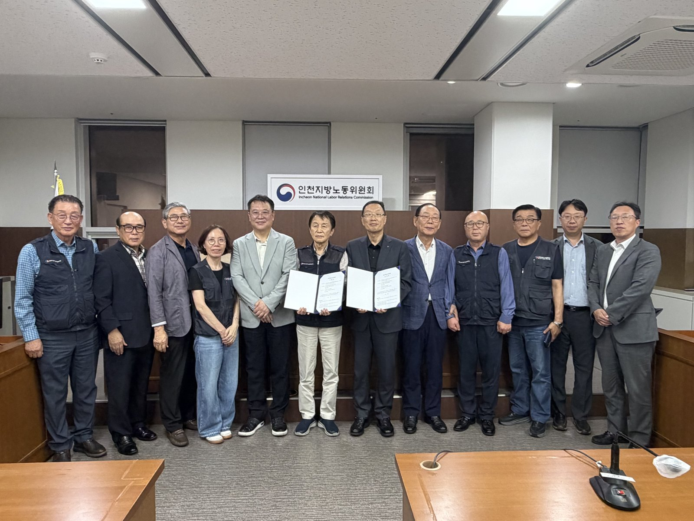

인천시 내년 예산 15조9천억…정부 이전재원이 자체수입 앞섰다
이전재원 12.4% 늘 때 자체수입은 0.4%
재정자립도 42.1%로 2%p 낮아져
AI경제저널=김갑봉 기자 | 인천시가 2027년도 예산안을 15조9000억 원으로 짜 5일 시의회에 낸다고 밝혔다. 올해 본예산보다 5740억 원(3.8%) 많다. 일반회계 12조1533억 원, 특별회계 3조7467억 원이다.
인천e음 캐시백이 붙는 월 사용 한도는 30만 원에서 50만 원으로 오른다. 시는 정부에서 노동감독 권한을 넘겨받아 30인 미만 사업장 노동감독에도 나설 계획이다.

늘어난 돈은 대부분 정부에서 왔다
돈이 들어오는 길을 보면 내년 예산의 성격이 드러난다. 보통교부세와 국고보조금 같은 정부 이전재원은 7조769억 원이다. 올해 본예산 6조2967억 원보다 7801억 원(12.4%) 늘었다.
지방세와 세외수입을 더한 자체수입은 6조8744억 원이다. 올해 6조8468억 원에서 0.4% 느는 데 그쳤다. 올해는 자체수입이 이전재원보다 5501억 원 많았다. 내년 안에서는 순서가 뒤집혀 이전재원이 2025억 원 많다(AI경제저널 계산).
쓸 곳이 정해진 돈도 커졌다. 법으로 정해졌거나 반드시 써야 하는 경비가 약 11조4000억 원으로 전체 예산의 약 72%다(AI경제저널 계산). 인천시는 전략적인 재원 배분이 더 중요해졌다고 설명했다.
복지 6조9678억 원, 전체의 43.8%
사회복지 예산은 6조9678억 원으로 올해보다 10.1% 늘었다. 전체의 43.8%다. 기초연금 1조5934억 원, 생계급여 8183억 원, 의료급여 8667억 원이 큰 몫이다. 국가 기준에 들지 않는 위기가구 2548명에게는 인천형 SOS 긴급복지를 준다.
인천e음 캐시백 예산은 2100억 원이다. 올해보다 749억 원 늘려 본예산에 다 넣었다. 연매출 30억 원 이하 가맹점의 캐시백 10%는 그대로 둔다. 한도가 오르면 한 달에 받을 수 있는 캐시백은 3만 원에서 5만 원이 된다(AI경제저널 계산).
소상공인과 농어촌 민생경제에는 6543억 원을 둔다. 소상공인 특례보증 출연금 100억 원과 이차보전금 126억 원이 골목상권 몫이다. 청년 월세 지원 122억 원, 재직청년 「Dream for 청년통장」 43억 원, 전세사기 피해자 지원 37억 원도 담았다.
교통비 지원도 이어진다. K-패스·i-패스 등 교통비 지원에 969억 원, 시내버스 준공영제에 2310억 원을 편성했다. 광역버스 준공영제는 670억 원으로 올해보다 400억 원 늘었다. 산후조리비 150만 원 지원 대상은 기준중위소득 60% 이하에서 70% 이하로 넓힌다.
30인 미만 사업장, 인천시가 감독한다
일하는 사람에게 가장 큰 변화는 노동감독이다. 인천시는 정부로부터 노동감독 권한을 위임받아 내년부터 30인 미만 사업장을 감독할 계획이라고 밝혔다. 이를 위해 조직도 정비한다.
근거는 올해 4월 7일 제정돼 12월 8일 시행되는 「노동감독관 직무집행법」이다. 이 법 제28조는 상시 30명 미만 사업장 감독 권한의 일부를 대통령령에 따라 시·도지사에게 위임할 수 있게 했다. 권한을 받은 시·도는 지방노동감독관을 둘 수 있다.
제34조는 지방노동감독관의 직무 수행에 필요한 경비를 국가가 부담한다고 정했다. 인천시는 하루 전인 4일 국회를 찾아 노동감독사무 위임 소요재원 102억 원을 국비로 달라고 요청했다. 기준인력 101명에 대한 인건비다.
미래산업 6천억, 광역교통 1조1384억 원
미래 성장 분야에는 약 6000억 원을 쓴다. 인공지능·바이오·콘텐츠·에너지 첨단산업 육성에 3166억 원, 중소·벤처기업 성장과 일자리에 2687억 원이다. K-바이오랩허브 건립 321억 원, 탄소포집용 수소생산기지 구축 61억 원, 피지컬 인공지능 실증센터 13억 원이 들어 있다.
교통과 원도심에는 2조4000억 원을 쓴다. 광역교통망과 핵심 교통시설이 1조1384억 원이다. 서울 7호선 청라 연장에 2379억 원, GTX-B 본선 건설분담금에 219억 원을 둔다. GTX-B 청학역 추가 정거장에는 470억 원이 들어갔다.
인천대로 일반화 1·2단계에는 921억 원, 내항 1·8부두 재개발에는 90억 원을 둔다. 2028년 G20 정상회의 유치 활동비 16억 원도 새로 넣었다.
내년 예산이 인천과 일하는 사람에게 말하는 것
첫째, 인천 살림의 바깥 의존이 커졌다. 인천시 예산안 개요를 보면 내년 재정자립도는 42.1%로 올해보다 2.0%p 낮다. 재정자주도도 51.7%로 1.0%p 내려간다. 내년 예산의 증가분은 사실상 중앙정부가 채웠다.
둘째, 국회가 인천 예산의 크기를 좌우한다. 이전재원은 정부 예산과 국회 심의에 달렸다. 노동감독 국비 102억 원이 붙느냐가 인천 노동감독의 규모를 정한다. 소규모 사업장 노동자가 임금체불이나 안전 문제를 시청에 기댈 길이 얼마나 넓어질지도 여기에 걸렸다.
셋째, 새 사업에 쓸 몫이 줄고 있다. 법정·필수 경비는 2025년 10조2100억 원, 2026년 10조7600억 원, 2027년 11조4000억 원으로 늘었다. 2년 새 1조1900억 원, 11.7% 늘었다(AI경제저널 계산). 시가 정책을 골라 쓸 여지가 그만큼 좁다.
넷째, 빚 비율 목표는 읽는 기준에 따라 다르다. 인천시는 관리채무비율을 올해 당초예산 기준 15.6%보다 낮은 15.3% 안팎으로 관리하겠다고 했다. 같은 개요에 올해 2회 추경 뒤 비율은 13.6%로 적혀 있다. 지금 수준과 견주면 1.7%p 오른다(AI경제저널 계산).
다섯째, 시민이 바로 받는 것은 분명하다. 인천e음 월 캐시백 최대치가 2만 원 늘고, 산후조리비 대상이 넓어진다. 소상공인은 특례보증과 이자 지원을 받는다. 시민과 시의회가 심의에서 따질 것은 이 지원과 미래 투자가 제자리걸음인 자체수입 위에서 얼마나 이어질 수 있느냐다.
예산안은 인천시의회 심의를 거쳐 확정된다. 박찬대 인천시장은 "시민의 일상을 지키고 인천의 제값을 찾기 위한 의지를 담았다"며 "편성된 예산이 현장에서 제때 집행되도록 책임 있게 관리하겠다"고 말했다.
참고문헌
- 인천광역시 예산담당관(2026). 인천시, 2027년 예산안 15조 9천억 원 편성, 민생 지키고 인천 제값 찾는다(보도자료). 2026년 11월 5일. https://www.incheon.go.kr/IC010205/view?repSeq=DOM_0000000015900573
- 인천광역시(2026). 2027년 예산안 개요(위 보도자료 붙임). 2026년 11월.
- 「노동감독관 직무집행법」(법률 제21534호, 2026. 4. 7. 제정, 2026. 12. 8. 시행) 제28조·제34조. 국가법령정보센터. https://www.law.go.kr/법령/노동감독관직무집행법
- 인천광역시 재정담당관(2026). 인천시, 2027년도 국비 확보 위해 국회 방문 총력 대응(보도자료·붙임). 2026년 11월 4일. https://www.incheon.go.kr/IC010205/view?repSeq=DOM_0000000015886684
- 인천광역시 예산담당관(2025). 2026년도 예산안 보도자료. 2025년 11월. https://www.incheon.go.kr/IC010205/view?repSeq=DOM_0000000013441585
[사진 출처]
- [사진1] 인천광역시 버스정책과 보도자료 「인천 시내버스 멈추지 않았다 노‧사 임금‧단체 협상 최종타결」 사진, 공공누리 제1유형, 2026.8.26., https://www.incheon.go.kr/IC010205/view?repSeq=DOM_0000000015403650
관련기사
- 인천시 "국비 1306억 더"…노동감독관 인건비·인천e음·M버스
- 인천 주민자치박람회 7일 월미도…주민자치회 법제화 뒤 첫 한마당
- 인천 로봇기업 8곳 "현장 같은 시험장 달라"…로봇랜드 테스트베드 밑그림
저작권자 © AI경제저널 무단전재 및 재배포, AI학습 및 활용 금지